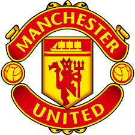

youtube
search
#title
#title
input title 리그 종료 시점까지 일주일에 2경기씩 치러야 하며 이는 나머지 19개팀들도 마찬가지다. 한편, 코로나19 이후 재개된 EPL 경기서 한 번에 5장의 카드를 동시에 교체한 것은 이번 맨유 솔샤르 감독이 처음이다
button
views 100
icon
icon
icon
icon
icon
channel
subscribe

up netxt 셰필드 유나이티드와의 맞대결에서 해트트릭을 가동한 마샬이 알렉스 퍼거슨 감독 이후 처음으로 맨유 유니폼을 입고 프리미어리그에서 해트트릭을 달성한 선수 명단에 이름을 올렸다.
up netxt 셰필드 유나이티드와의 맞대결에서 해트트릭을 가동한 마샬이 알렉스 퍼거슨 감독 이후 처음으로 맨유 유니폼을 입고 프리미어리그에서 해트트릭을 달성한 선수 명단에 이름을 올렸다.
up netxt 셰필드 유나이티드와의 맞대결에서 해트트릭을 가동한 마샬이 알렉스 퍼거슨 감독 이후 처음으로 맨유 유니폼을 입고 프리미어리그에서 해트트릭을 달성한 선수 명단에 이름을 올렸다.